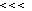
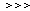
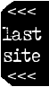
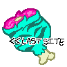

our space: historic lifelineOur Space was a "webring of static sites created by the individual who runs it - personal, hand-crafted sites", despite of this, the webring is no longer maintained, so because of that, this website was made for the sake of being some kind of last lifeline due to the fact that some of the websites that were apart of it have since been deleted, so will lead to a 404.If you have an our space banner on your site, were apart of it, or even want to put the banner on your website for the first time, then you should replace your old JavaScript code to the updated one; From the old one...<center> <SCRIPT LANGUAGE="JavaScript"><!-- if (navigator.appVersion.indexOf('MSIE 3') == -1) document.write('<SCRIPT LANGUAGE="JavaScript1.1" SRC="https://ourspace.neocities.org/ring.js"><\/SCRIPT>'); else document.write('<CENTER><IFRAME FRAMEBORDER=0 WIDTH="100" HEIGHT="50" MARGINHEIGHT=0 MARGINWIDTH=0 SCROLLING=no SRC="https://ourspace.neocities.org/ring.html"><\/IFRAME><\/CENTER>'); //--></SCRIPT> </center>To the new one... <center> <SCRIPT LANGUAGE="JavaScript"><!-- if (navigator.appVersion.indexOf('MSIE 3') == -1) document.write('<SCRIPT LANGUAGE="JavaScript1.1" SRC="https://neozones.neocities.org/ourspace/ring.js"><\/SCRIPT>'); else document.write('<CENTER><IFRAME FRAMEBORDER=0 WIDTH="100" HEIGHT="50" MARGINHEIGHT=0 MARGINWIDTH=0 SCROLLING=no SRC="https://neozones.neocities.org/ourspace/ring.html"><\/IFRAME><\/CENTER>'); //--></SCRIPT> </center> As this is attempting to be a "historic lifeline", then we will not be excepting new members; this was only made for pre-existing ones only - sorry if you wanted to join or be apart of this webring, but perhaps you should try and join another one.
This project is maintained by the losers at NeoZones, if you are a pre-existing member and you have moved your site or you spot a link to a newly deleted site, please tell us.
     by gigi @ bootleg64:  by wizardcat:  by jake: the code membersupdated: 2020-02-10+ poor laika - "A small personal site floating in (cyber)space. Photography, writing, and even stuff for visitors to take home with them" + Lil Melon Kingdom - "Long live the melon empire!" + My Own Universe - "I try to learn coding in my site" + WebSiteRing - "NOTICE: TO COMPLY WITH PRIVACY LAWS THIS SITE IS FOR AGES 14 AND UP. A weblog listing old websites, Bible verses, and, on occasion, other web-related resources. Updated almost every day." + Like Home - "Make yourself at home" + Rocketmix - "A website where a kid has a daily blog and sometimes posts other stuff." + UsernameTaken - "personal website for things, apologies if any of the links are broken" + FloppyJay - "Fun Stuff, Web Resources, Kewl Games, and more to enhance your journey through the web. Click to explore!" + Jowie Schulner - "Dutch electronic music pioneer." + Misty's World - "A personal webpage where the design is inspired by websites from the 90s. It exists for me to strengthen my HTML skills, and to share my personality with the world!" + codeinfig - "A site dedicated to coding, computers and the fig programming language." + bootleg64 - "Personal webspace with writings and drawings!" + Caitlin Rose Moore's Art - "A portfolio of my art and media!" + lukas's world! - "my personal site! :D i talk about my interests and post pics of random things that i think the netizens viewing will enjoy!" + Conor's World - "Your destination has been reached. Welcome to Connor's World!" + arcadevirus - "personal web-site, a place for me to make my own and have fun and improve at html!" + Aether Fountains - "Welcome to Aether Fountains, your one-stop for all your A e t h e r needs on the wired. We hope you enjoy your stay at A e t h e r Fountains." + PotassiumMCR - "My website is just a bunch of random stuff, but the main area is my music collection, or me talking about my favorite artists and stuff, but will also include my blog, my graphic design stuff and more." + tsuyoi medicine - "personal space with little interesting things here and there. has a mini blog about nothing in particular and more things planned to be added" + Up All Night - "A place where I'll write about various pop culture topics from the 80s, 90s and early 2000s including video games, TV, film, etc." + finn's hellscape - "dedicated to things i like, mostly idol pop, supplemented with lovely graphics." + rick's site! - " a personal site that talks about lot of stuff! old music, art, etc etc.." No longer on Neocities + MerlinXP's website " It's about my computing and gaming experiences, and I also do a blog about things come into my mind." + Station Square - "Station Square is just a Sonic fansite with some interesting features. Visitor involvement is welcome (and encouraged)." + goodmode - "a personal site about thoughts, experiences, and connection" + Lykakspars - " The personal website with some public stuff." + exosilver's fansite - " my personal stompin' grounds on the internet. contains: retro game collecting, cartoons, rubbish. perpetually in a state of unfinishedness." + Andrew Jonkman's Rabbit Hole - "Just a little personal site that I thought I would add here since I love the concept. It currently just features a blog and stuff about me." + Hopefully you? |